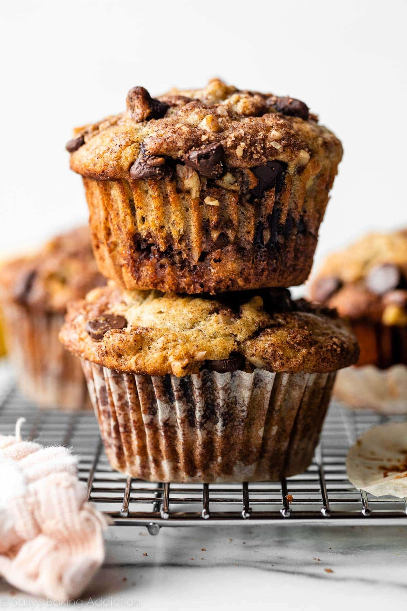

Oatmeal Chocolate Chip Yogurt Muffins

Description
These oatmeal chocolate chip greek yogurt muffins are to die for! A healthier, heartier, protein-based muffin for the entire family.
Ingredients
- 1 cup of flour*
- 1 1/2 cups old-fashioned oats
- 1 1/2 teaspoons baking powder
- 1 teaspoon baking soda
- 1/2 teaspoon salt
- 1 teaspoon cinnamon
- 1/4 cup canola oil
- 1/2 cup brown sugar
- 2 eggs
- 1 teaspoon vanilla
- 1 cup Greek vanilla yogurt
- 1 cup chocolate chips
* Note: You may use any flour you'd like! I used all-purpose flour.
Instructions
- Preheat the oven to 350 degrees farenheight.
- Lightly grease a 12-cup muffin pan with cooking spray and set aside
- In a large bowl, mix together the flour, oats, baking powder, baking soda, salt, and cinnamon.
- In a medium bowl, mix together the oil, brown sugar, eggs, vanilla, and greek yogurt.
- Stir the wet ingredients into the dry ingredients, and mix well. Then fold in the chocolate chips.
- Divide the batter evenly among the greased muffin cups, filling each one 3/4 of the way.
- Bake the muffins for 15-18 minutes, or until the muffins start to turn golden brown. Once you remove the muffins, let them cool in the pan for 5-10 minutes before transferring to a wire rack to cool completely
- Enjoy!